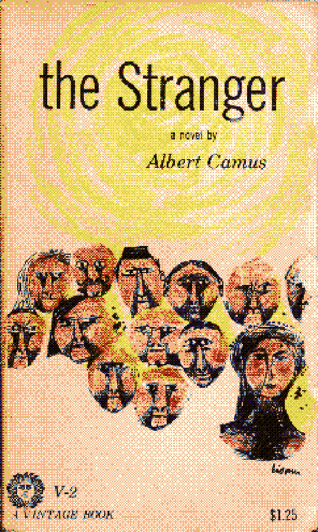

I've been trying to read more books, and neat little lists motivate my lizard brain.
- - - > home < - - -
The Three Body Problem - Cixin LiuAn interesting take on speculative science fiction that relates itself to many real world concepts (the three body stuff.) Subverts many of the cliches of sci-fi. Not the biggest fan of the ending, I definitely think the first 2/3rds of the book had better buildup and plot reveal.
The Picture of Dorain Gray - Oscar Wilde
The Pearl - John Steinbeck
The Winter Of Our Discontent - John SteinbeckSteinbeck's usual writing style of choice is epic; great american upheavels portrayed through the actions and minutiae of those affected. In The Winter of our Discontent, Steinbeck focuses in on a much more subtle and slow change: the erosion of great sea-faring families from glory to mundane suburban life. Mal-content with his day job as a clerk, Ethan Hawley reckons with his past, his percieved status, and his schemes to restore his rank. A very dramatic mid-life crisis.

The Stranger - Albert Camus